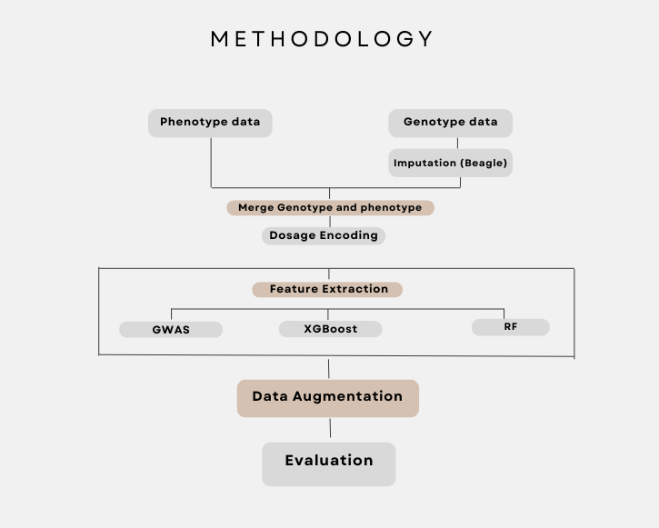

Methodology
The methodology adopted in this research follows a comprehensive pipeline from raw data collection to model evaluation and trait prediction. The steps include:
- Data Collection: Both phenotypic and genotypic data for wheat varieties were collected from South Punjab fields.
- Data Cleaning: Non-standard SNP values like W, N, R, Y, S, M, X, and 0 were handled before imputation.
- Imputation: Missing genotype data was imputed using the Beagle tool.
- Feature Selection: GWAS, Random Forest, and XGBoost were applied to identify significant SNPs.
- Prediction: Selected features were used to predict key traits using machine learning models.
- Evaluation: Model performance was evaluated using R², RMSE, and MAE metrics.
